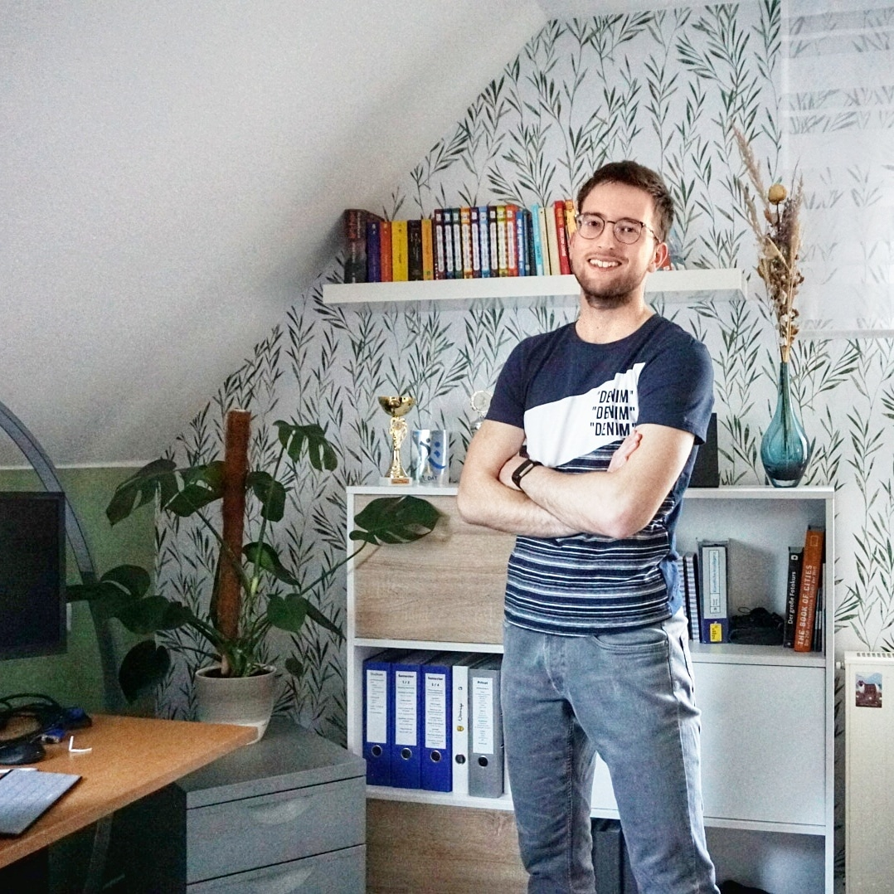
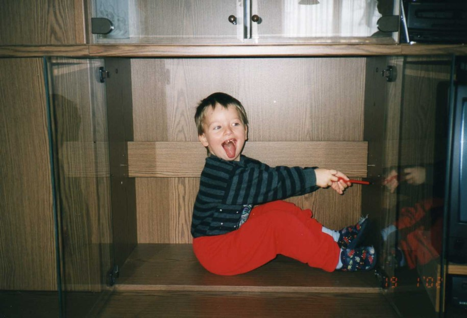
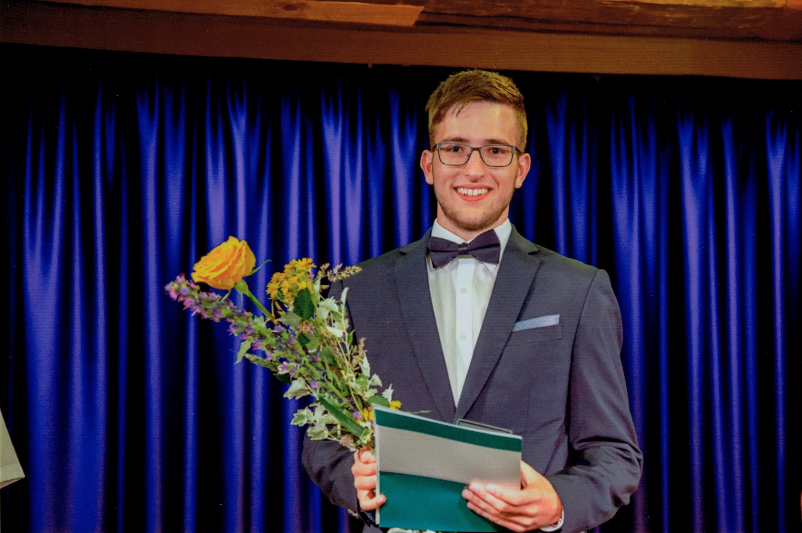
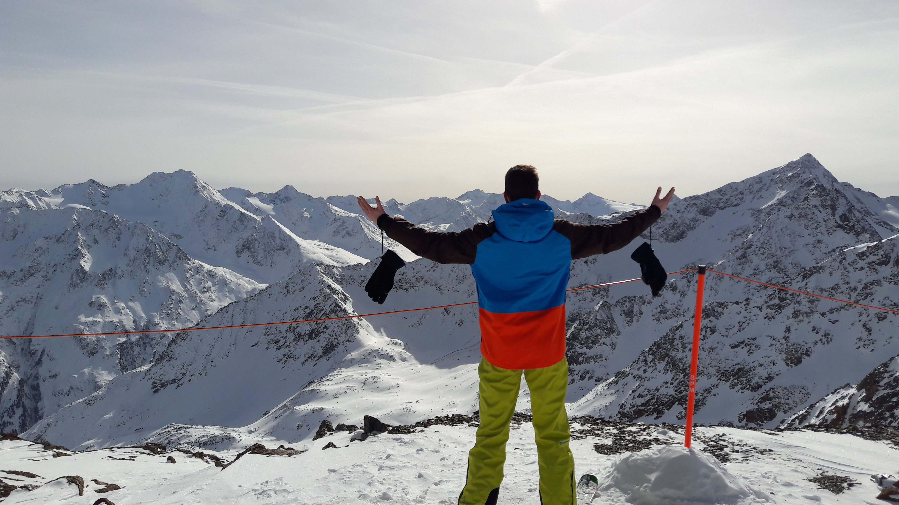

About Me
Eric Kunze
Vom Schüler zum Studenten
 Aufgewachsen bin ich auf dem Dorf in der Nähe von Glashütte (das mit den Uhren), zur Schule gegangen in Altenberg (das mit dem Wintersport und der Bobbahn). Zur Einschätzung, was bei mir Dorfmaßstäbe sind: unser Dorf besitzt einen Postbriefkasten, aber das war's dann auch schon (wenn man von der inzwischen entstandenen Brauerei absieht). Mein Abi habe ich im Jahr 2017 gemacht - unser Abschlussjahrgang bestand aus knapp 30 Schülerinnen und Schüler. Bereits in der Schule haben ich liebend gern anderen Mitschülerinnen und Mitschülern geholfen, habe da bereits angefangen Nachhilfe zu geben. Und als das mit der Schule dann abgehakt war - und glaube mir, ich war seeeehr froh darüber - dann wollte ich doch mal andere Maßstäbe kennenlernen. Wahrscheinlich wirst du mich jetzt belächeln, aber für mich war und ist Dresden tatsächlich ein anderer Maßstab. 
Schließlich habe ich zum Wintersemester 2017/18 mein reines Mathe-Studium mit Nebenfach Informatik begonnen. Viel Frustation und Durchhaltevermögen habe auch ich in den ersten Jahren gebraucht. Als dieser Punkt überwunden war, begann die Faszination und Freude an der Mathematik. Schließlich vertiefte ich mich weiter in Richtung Numerik & Optimierung sowie Stochastik.
Von Anfang an war Informatik ein durchaus interessantes Nebenprojekt, so interessant, dass ich nicht aufhören konnte und über den Pflichtumfang hinaus weiter Vorlesungen gehört habe. Konsequenz dessen war schließlich das Parallelstudium seit dem Sommersemster 2020.
Wissen weitergeben - Einsatz in der Lehre
Bereits zu Schulzeiten habe ich gern mein Wissen genutzt um anderen zu helfen. Umso mehr habe ich mich gefreut als ich im Sommersemester 2019 meine ersten Übungen zur Vorlesung "Programmierung" halten durfte. Ich möchte mein Wissen weitergeben und das nicht trocken und langweilig. Mit Spaß und nicht zu viel Ernst versuche ich dir das Lernen zu erleichtern, auch wenn es zu unchristlichen Zeiten sein sollte. Über die Jahre habe ich mittlerweile auch den ein oder anderen Tipp gesammelt, den ich gerne an dich weitergebe um dir das Studium zu erleichtern.
Oft bekomme ich die Frage, wieso ich so viel Zeit und Mühe in meine Übungen investiere - die Antwort ist relativ einfach: es macht mir verdammt viel Spaß! Das Gefühl anderen zu helfen zu können, die mir nur mit ehrlicher Dankbarkeit entgegenkommen, das lässt mich nach jeder Übung glücklich zurück. Und nicht zuletzt erfreut mich jeder nette Plausch vor oder nach den Übungen!
- Abitur an der Außenstelle des "Glückauf"-Gymnasium in Altenberg im Jahr 2017
Abschlussnote: 1,0 - Studium der Mathematik und Informatik an der Technischen Universität Dresden seit Oktober 2017
Ein Nerd?
Nun könnte man meinen, ich würde den ganzen Tag nur vor Papier und PC sitzen. Vielleicht ist es nicht unwahr, dass ich viel Zeit mit dem Studium verbringe. Dennoch gibt es mich noch in vielen anderen Facetten.
 Sport - das war und ist mein Ausgleich. Seit der ersten Klasse habe ich Volleyball gespielt. Mit kurzen Interventionen im Leistungszentrum des VC Dresden bin ich Ende doch stets meinem Heimatverein in Glashütte als Zuspieler treu geblieben. Nach vielen Höhen und Tiefen habe ich nun im April 2020 die Knieschoner in den Schrank gelegt.
 Im Winter geht es stets auf die Ski - zumeist eher schnell bergab, aber liebendgern auch auf den schmalen Brettern in der Loipe. Ist die weiße Pracht dann wieder weg, wird das Fahrrad rausgeholt oder die Wanderschuhe geschnürt. Es gibt nichts besseres als die Ruhe in den Bergen und - wer mich kennt, der wird es ahnen: einem leckeren Apfelstrudel mit Vanillesoße.
Im Winter geht es stets auf die Ski - zumeist eher schnell bergab, aber liebendgern auch auf den schmalen Brettern in der Loipe. Ist die weiße Pracht dann wieder weg, wird das Fahrrad rausgeholt oder die Wanderschuhe geschnürt. Es gibt nichts besseres als die Ruhe in den Bergen und - wer mich kennt, der wird es ahnen: einem leckeren Apfelstrudel mit Vanillesoße.
 Was eigentlich als Gruppenzwang in der 9. Klasse begann, ist heute fast mehr als ein Hobby: das Tanzen. In der Tanzstunde 2013 begonnen, habe ich nie aufhören können: über Aufbaukurse und Jugenclub trieb es mich in das Formationsteam im Tanzclub Richter in Freital. Nach einigen sehr schönen Jahren in der "TCR-Familie" und der Standardformation, die auch zwei Deutsche Meistertitel im DAT hervorbrachten, reizte der Leistungssport dann doch noch einmal. Mit dem Neustart im neuen Verband und dem Fokus auf die Standard- und Lateinamerikanischen Tänze führte uns (meine Partnerin & mich) der Weg schließlich zum TSC Excelsior nach Dresden, wo wir seit Juni 2020 ein exzellentes Trainingsumfeld genießen können. Bei drei, vier oder mehr Trainingseinheiten in der Woche findet man mich also - wenn nicht in der Uni - wohl am wahrscheinlichsten schwitzend im Trainingssaal.
Was eigentlich als Gruppenzwang in der 9. Klasse begann, ist heute fast mehr als ein Hobby: das Tanzen. In der Tanzstunde 2013 begonnen, habe ich nie aufhören können: über Aufbaukurse und Jugenclub trieb es mich in das Formationsteam im Tanzclub Richter in Freital. Nach einigen sehr schönen Jahren in der "TCR-Familie" und der Standardformation, die auch zwei Deutsche Meistertitel im DAT hervorbrachten, reizte der Leistungssport dann doch noch einmal. Mit dem Neustart im neuen Verband und dem Fokus auf die Standard- und Lateinamerikanischen Tänze führte uns (meine Partnerin & mich) der Weg schließlich zum TSC Excelsior nach Dresden, wo wir seit Juni 2020 ein exzellentes Trainingsumfeld genießen können. Bei drei, vier oder mehr Trainingseinheiten in der Woche findet man mich also - wenn nicht in der Uni - wohl am wahrscheinlichsten schwitzend im Trainingssaal.
- Volleyball im SVV 1990 Glashütte-Schlottwitz von 2006 bis 2020
-
Tanzsport im DAT von 2013 bis 2020
Standard, Latein, Standardformation
Erfolge: Deutscher Meister der Standardformation im DAT -
Tanzsport im DTV seit Juni 2020
Standard & Latein
Erfolge: 3. Platz der Landesmeisterschaft Standard D-Klasse 2020 (Ergebnisse)
Ein letztes Wort
Das alles zusammen ist quasi mein Leben - und nebenbei fällt dann manchmal auch noch die ein oder andere Minute ab, in der ich einfach mal nur mit Freunden chillen oder (das soll es auch geben) faul vor dem Handy hänge.
Zu viel Informationen?
Du bist gerade überrascht, wie viel du über deinen Tutor erfahren hast? Kann ich verstehen, aber ich finde es cooler, nicht der "Geheimnisvolle" an der Tafel zu sein. Also: quatsch mich ruhig drauf an - ich lerne auch gerne meine Studierenden kennen. :)